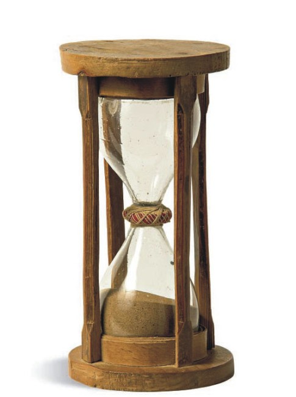
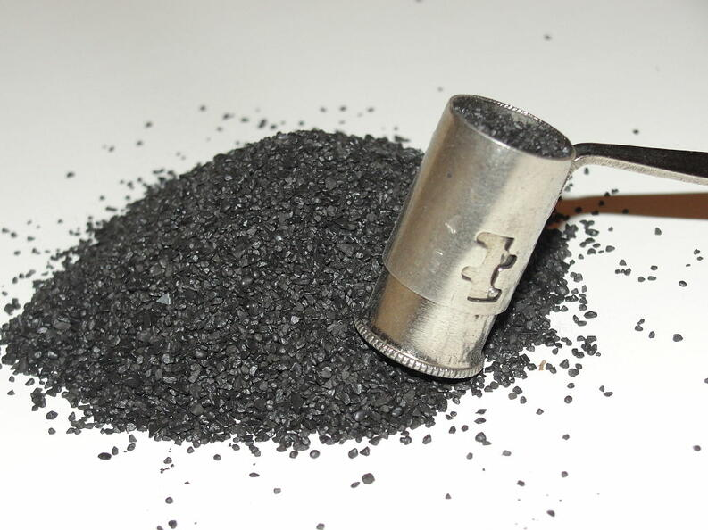
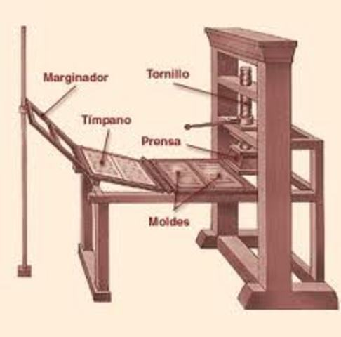
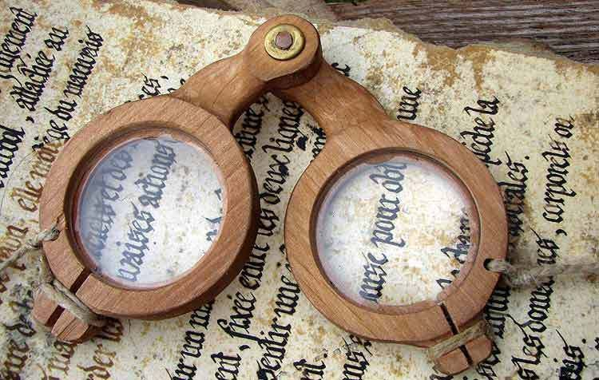
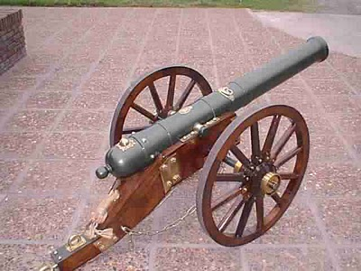
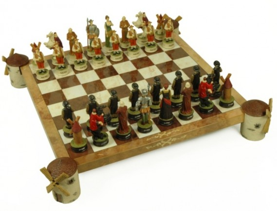
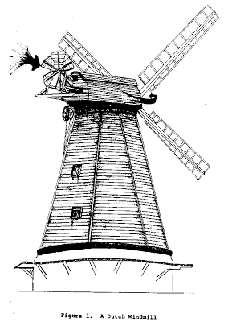
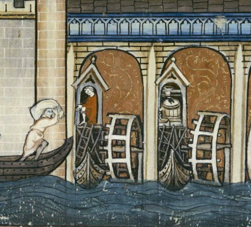

⠀
Aunque se han propuesto varias fechas para el inicio de la Edad Media, de las cuales la más extendida es la del año 476, lo cierto es que no podemos ubicar el inicio de una manera tan exacta ya que la Edad Media no nace, sino que "se hace" a consecuencia de todo un largo y lento proceso que se extiende por espacio de cinco siglos y que provoca cambios enormes a todos los niveles de una forma muy profunda que incluso repercutirán hasta nuestros días. Podemos considerar que ese proceso empieza con la crisis del siglo III, vinculada a los problemas de reproducción inherentes al modo de producción esclavista, que necesitaba una expansión imperial continua que ya no se producía tras la fijación del limes romano. Posiblemente también confluyeran factores climáticos para la sucesión de malas cosechas y epidemias; y de un modo mucho más evidente las primeras invasiones germánicas y sublevaciones campesinas (bagaudas), en un periodo en que se suceden muchos breves y trágicos mandatos imperiales. Desde Caracalla la ciudadanía romana estaba extendida a todos los hombres libres del Imperio, muestra de que tal condición, antes tan codiciada, había dejado de ser atractiva. El Bajo Imperio adquiere un aspecto cada vez más medieval desde principios del siglo IV con las reformas de Diocleciano: difuminación de las diferencias entre los esclavos, cada vez más escasos, y los colonos, campesinos libres, pero sujetos a condiciones cada vez mayores de servidumbre, que pierden la libertad de cambiar de domicilio, teniendo que trabajar siempre la misma tierra; herencia obligatoria de cargos públicos —antes disputados en reñidas elecciones— y oficios artesanales, sometidos a colegiación —precedente de los gremios—, todo para evitar la evasión fiscal y la despoblación de las ciudades, cuyo papel de centro de consumo y de comercio y de articulación de las zonas rurales cada vez es menos importante. Al menos, las reformas consiguen mantener el edificio institucional romano, aunque no sin intensificar la ruralización y aristocratización (pasos claros hacia el feudalismo), sobre todo en Occidente, que queda desvinculado de Oriente con la partición del Imperio. Otro cambio decisivo fue la implantación del cristianismo como nueva religión oficial por el Edicto de Tesalónica de Teodosio I el Grande (380) precedido por el Edicto de Milán (313) con el que Constantino I el Grande recompensó a los hasta entonces subversivos por su providencialista ayuda en la batalla del Puente Milvio (312), junto con otras presuntas cesiones más temporales cuya fraudulenta reclamación (Pseudo-donación de Constantino) fue una constante de los Estados Pontificios durante toda la Edad Media, incluso tras la evidencia de su refutación por el humanista Lorenzo Valla⠀
INVENTOS DE LA EDAD MEDIA:⠀
Reloj de arena: Se cree que el reloj de arena fue introducido en Europa en el siglo IX por Liutprando de Cremona, aunque también sería plausible creer que provino de Asia. Este artefacto utilizado para medir el tiempo, que en la actualidad se ha convertido más en un objeto decorativo, fue precedido por la clepsidra (reloj de agua), un invento egipcio utilizado para medir el tiempo, sobre todo durante la noche cuando los relojes de sol dejaban de funcionar.⠀
⠀
La polvora: umándose a los inventos de la Edad Media está la pólvora, obra de alquimistas chinos en el siglo IX. La pólvora constituyó el primer explosivo físico y, en teoría, llegó a Europa a través de la Ruta de la Seda (desde Oriente Medio) o mediante la invasión mongólica en el siglo XIII. Un detalle curioso y enormemente paradójico es que los alquimistas que la descubrieron en realidad estaban experimentando con elixires para prolongar la vida cuando llegaron a la fórmula de la pólvora, que la dinastía Sung pronto utilizaría para combatir a las tropas mongolas.⠀
⠀
La imprenta: En China se desarrolló en el siglo XI la tecnología para poder imprimir sobre materiales como el papel, pero fue en el siglo XV, a caballo entre la Edad Media y la Moderna, cuando el alemán Johannes Gutenberg y su imprenta inició una nueva era en la producción de libros en cantidades importantes.⠀
⠀
Las gafas: A finales del siglo XIII los ojos al fin pudieron ver con claridad aquellos objetos y lecturas que anhelaban analizar. Se desconoce quién fue en realidad el inventor de estos objetos tan revolucionarios que pusieron en práctica los principios de la óptica, pero quien haya sido, le hizo un gran favor a las personas con problemas de vista quienes por fin pudieron tener una herramienta que les permitiera llevar una vida más normal.⠀
⠀
El cañón: Como ya hemos visto, los chinos fueron grandes inventores que legaron a la humanidad los principios básicos de muchas cosas. El cañón es otro de sus inventos: desarrollado en el siglo XIII no fue hasta el XIV que se introdujo en Europa durante el asedio a la ciudad francesa de Metz. Al igual que la pólvora, los cañones sirvieron como un gran adelanto en las batallas encontrando también una gran utilidad tanto en los combates marinos como en los terrestres.⠀
⠀
El ajedrez: Uno de los juegos más populares y fascinantes de nuestros tiempos tiene un origen aún discutible: la mayoría de las fuentes señala la India como lugar de nacimiento. De ahí comenzó un largo recorrido por Persia, el mundo musulmán hasta llegar a Europa, abarcando los lejanos territorios de Islandia.⠀
⠀
Los molinos de agua y viento: Los molinos fueron utilizados por el hombre desde los tiempos del Neolítico pero fue en la temprana Edad Media cuando se hicieron muy populares. En ese período medieval se inventaron nuevas e ingeniosas formas de molinos, permitiendo a la población utilizar la energía de elementos de la naturaleza como el agua de los ríos o el viento.⠀
⠀
⠀